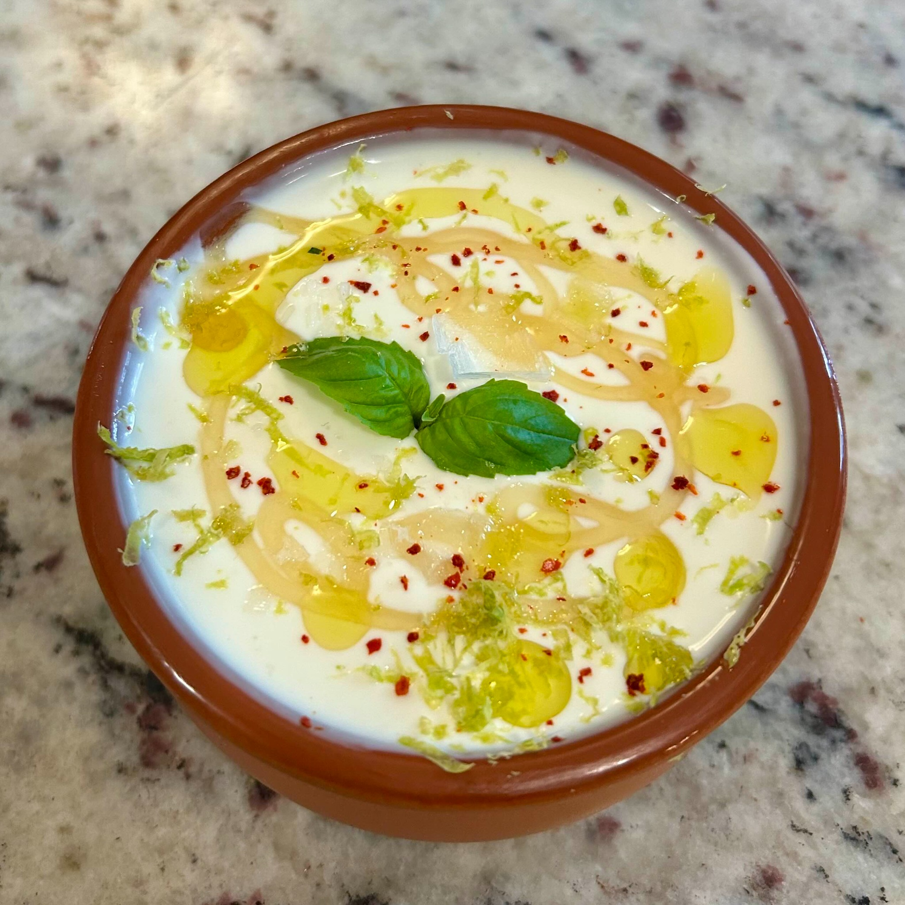
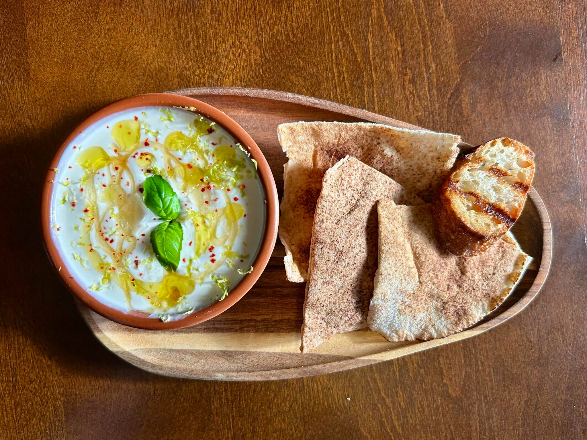

Side
Whipped Ricotta
A very simple ricotta dip, whipped with olive oil, honey, and pink salt until smooth, then finished with a few fresh, contrasting garnishes.


Ingredients
- 242 g (8oz) ricotta
- 1 1/2 tsp extra-virgin olive oil
- Honey, to taste (say 2 tsps)
- Lemon or lime juice, to taste (say 1-2 tsps)
- Pink salt, to taste (say 1/2 tsp)
To finish
- Extra-virgin olive oil, for drizzling
- Honey, for drizzling
- Flaky salt, for sprinkling
- Fresh basil and/or mint
- Chili flakes, to taste
Method
- Put the ricotta in a small food processor or blender with 1 1/2 teaspoons extra-virgin olive oil, a little honey, and pink salt to taste.
- Whip until completely smooth, light, and glossy, scraping down the sides as needed.
- Spoon the whipped ricotta into a shallow bowl and smooth the surface.
- Finish with another light drizzle of olive oil and honey, then sprinkle with flaky salt. Add basil, mint, chili flakes, or any combination of them to taste.
Serving
Serve with warm flatbread, grilled bread, or crisp vegetables.
Notes
This is meant to stay extremely simple. The point is the texture: blend longer than seems necessary, until the ricotta loses its graininess and becomes almost cream-like.